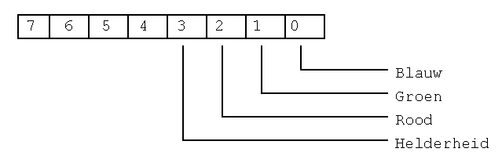

Grafisch programmeren in Assembler (DOS)
Inhoudsopgave
- 1. Naar een VGA resolutie gaan.
- 2. Naar het video geheugen schrijven
- 3. Aangepaste kleuren
- 4. Uit het VGA scherm lezen
- 5. Scrijfmodes instellen
- 6. Het tekenen van een lijn
- 7. Geraadpleegde werken
1. Naar een VGA resolutie gaan.
De BIOS interrupt welke voor grafische funktie gebruikt wordt is INT 10h. Met de funktie AH = 00, kunnen naar tussen de verschillende video mode omschakelen (zie onderstaande tabel).
| Al (hex) | video mode |
|---|---|
| 0 | tekst 40 x 25 16 grijswaarden |
| 1 | tekst 40 x 25 16 kleuren |
| 2 | tekst 80 x 25 16 grijswaarden |
| 3 | tekst 80 x 25 16 kleuren |
| 4 | grafisch (CGA) 320 x 200 kleur |
| 5 | grafisch (CGA) 320 x 200 zwart-wit |
| 6 | grafisch (CGA) 640 x 200 zwart-wit |
| 7 | tekst 80 x 25 zwart-wit (MDA, Hercules) |
| ... | ... |
| F | grafisch (EGA,VGA) 640x350 monochroom |
| 10 | grafisch (EGA,VGA) 640x350 16 keuren |
| 11 | grafisch (VGA) 2 kleuren |
| 12 | grafisch (VGA) 16 kleuren |
We zullen het in hoofdzaak over de laatste (12h) resolutie hebben in de volgende paragraven. Tegenwoordig hebben de meeste VGA-kaarten ook zgn. "Super VGA" - resoluties, om naar deze resolutie te gaan kunnen we ook INT 10h AH=00h gebruiken. Dit geeft echter problemen doordat elke fabrikant van VGA-kaarten hiervoor anderen waarde voor AL neemt. Of m.a.w. dit is niet gestandaardiseerd. Om deze problemen op te lossen heeft men de VESA-bios ontwikkeld, de meeste moderne VGA-kaarten beschikken over zo'n bios. In onderstaande tabel ziet je hoe je naar de "VESA Super VGA"-resolutie moet gaan.
| INT 10h | AX = 4F02h |
| BX = mode |
| BX | video mode |
|---|---|
| 100h | grafisch 640x400 256 kleuren |
| 101h | grafisch 640x480 256 kleuren |
| 102h | grafisch 800x600 16 kleuren |
| 103h | grafisch 800x600 256 kleuren |
| 104h | grafisch 1024x768 16 kleuren |
| 105h | grafisch 1024x768 256 kleuren |
| 106h | grafisch 1280x1024 16 kleuren |
| 107h | grafisch 1280x1024 256 kleuren |
| 108h | tekst 80x60 |
| 109h | tekst 132x25 |
| 10Ah | tekst 132x43 |
| 10Bh | tekst 132x50 |
| 10Ch | tekst 132x60 |
Indien de funktie wordt ondersteund is AH = 00h, wordt de funktie niet ondersteund komt is AH = 01h. De in de volgende paragraven besproken onderwerpen kunnen ook voor de VESA-resolutie 800 x 600 16 kleuren gebruikt worden.
2. Naar het video geheugen schrijven
De standaard IBM VGA kaart heeft 16 kleuren, bijgevolg wordt elke pixel voorgesteld door 4 bits (2^4 = 16). Bij VGA in resolutie 640 x 480 16 kleuren maakt men om dit te bekomen gebruik van kleurbanken (bitplanes voor de engelstaligen), enkel basiskleur (Rood, Groen, Blauw, Intensiteit) heeft zijn eigen geheugengebied (kleurbank) in het geheugen van de VGA kaart. Het basis adres is voor al de 4 kleurbanken gelijk namelijk A000:0000h, en geheugen georiënteerd (memory mapped), om te bepalen naar welke kleurbank we schrijven kunnen we de VGA kaart instellen met het zgn. Map Mask register. In het Map Mask register kunnen schrijven door in het indexregister van de sequencer in te stellen, dit gebeurt via het poort adres 03C4h. Onderstaande tabel geeft de mogelijke funkties weer, door in het overeenstemmende dataregister (03C5h) te schrijven kunnen we de sequencer programmeren.
register selektie met poort adres 03C4h.
| register | naam |
|---|---|
| 00 | reset |
| 01 | Clocking mode |
| 02 | Map Mask |
| 03 | Character Map Select |
| 04 | Memory mode |
Met het Map Mask register kunnen we dus bepalen naar welke kleurbank we schrijven.

Is bv. bit 0 gezet dan zal zullen naar de blauwe kleurbank schrijven, zijn bit 0 en 1 gezet (3) dan zullen we naar de blauwe en de groene kleurbank schrijven. Zoals meestal is de theorie ingewikkelder dan de praktijk volgend praktisch voorbeeld zal (hopelijk?) het voorgaande verduidelijken.
.MODEL SMALL
.CODE
start:
mov ax,012h ;naar VGA mode
int 10h ;640 x 480 16kl. gaan.
mov ax,0A000h
mov es,ax ;zet ES op videosegment.
mov dx,03C4h ;dx = indexregister
mov ax,0F02h ;INDEX = MASK MAP,
out dx,ax ;naar alle banken schrijven.
mov di,0 ;DI wijzer (pointer) naar scherm.
mov cx,38400 ;(640 * 480)/8 = 38400
mov ax,0FFh ;vul alle pixels
rep stosb ;maak het scherm wit
mov ah,4ch ;verlaat
int 21h ; het programma
END start
Vermits met mov ax,0F02h , out dx,ax alle kleurbanken geselekteerd zijn krijgen we de kleur wit. In die we dit vervangen door mov ax,0102h krijgen we de kleur blauw.
3. Aangepaste kleuren
Een groot voordeel van VGA t.o.v. EGA (buiten de hogere resolutie) is de mogelijkheid om kleuren aan te passen. Op deze manier is het mogelijk om tekeningen er "echter" te laten uit zien. Om kleuren aan te passen kan men op 2 manieren te werk gaan; rechtstreeks de hardware programmeren of gebruik maken we van de INT 10h funktie. Deze laatste is het eenvoudigste en garandeert ook de kompatibiliteit met zgn. kloon VGA kaarten. Met INT 10h AX = 1010h kunnen we de kleurwaarde instellen van 1 kleur, BX bevat het kleurregister, CH de groenwaarde, CL de blauwwaarde en DH de roodwaarde. Nu komen het kleurregister en het kleurnummer niet helemaal met elkaar overeen, dit kunnen we oplossen door eerst van een bepaalde kleur eerst het kleurregister waarde op te vragen. Met INT 10h, AX = 1007h kunnen we dit doen, in BL zetten het kleurnummer na uitvoering van INT 10h komt in bh het kleurregisternummer. Volgend voorbeeld bewijs opnieuw dat de praktijk eenvoudiger is dan de theorie.
;------------------------------------------
;Past een bepaalde kleur aan
;BX = kleurnummer
;ch = groen waarde
;cl = blauw waarde
;dh = rood waarde
;------------------------------------------
pal PROC
push ax
mov bh,0
mov ax,1007h
int 10h
mov bl,bh
mov bh,0
mov ax,1010h
int 10h
pop ax
ret
pal ENDP
4. Uit het VGA scherm lezen
Het lezen uit het VGA scherm is (zoals je waarschijnlijk al vermoede) analoog aan het schrijven naar het VGA scherm. Nu moeten we de grafische controller instellen in de lees mode dit gebeurt het adres- 03CEh & het dataregister 03CFh.
In de onderstaande tabel vindt u de verschillende funktie:
| register | naam |
|---|---|
| 1 | Set/Reset |
| 2 | Enable Set/Reset |
| 3 | Data Rotate/Function Select |
| 4 | Read Map Select |
| 5 | Graphics mode |
| 6 | Miscellaneous |
| 7 | Color don't care |
| 8 | Bit Mask |
Door op het poort adres 03CEh de waarde 3 te zetten stellen we dus de lees mode in, met 03CF bepalen de kleurbank waaruit we lezen. In onderstaande tabel ziet u welke waarde over een komt met welke kleurbank.
| 3 2 1 0 |
blauw groen rood intensiteit |
Onderstaande procedure demonstreert het voorgaande, ze lees uit de 4 kleurbanken (BGRI) een byte, SI geeft aan welke byte gelezen wordt.
PUBLIC readbyte
;--------------------------------------------
;Leest een byte van het grafisch scherm
;aanroep : SI byte adres
;antwoord: al,ah,bl,bh -> bl,gr,rood,inten
;--------------------------------------------
readbyte PROC NEAR
push cx
push dx
push si
push es
mov ax,0A000h
mov es,ax
mov dx,03ceh
mov ax,0005h
out dx,ax
mov ax,0304h
rb01: out dx,ax ;lees mode instellen AH=kleurbank, AL=leesmode
mov bh,es:[si] ;lees de blauwe byte
dec ah
out dx,ax ;AH = groen
mov bl,es:[si] ;lees de groene byte
dec ah
out dx,ax ;AH = rood
mov ch,es:[si] ;lees de rode byte
dec ah
out dx,ax ;AH = intensiteit
mov cl,es:[si] ;lees de intensiteit byte
mov ax,cx
pop es
pop si
pop dx
pop cx
ret
readbyte ENDP
5. Schrijfmodes instellen
In paragraaf 2 hebben we bekeken hoe we data op het scherm kunnen plaatsen. We kunnen deze data op 4 manieren op het scherm tonen; vervanging, AND, OR en XOR. Dit kunnen we instellen via het "Data Rotate/Function Select" register (zie tabel paragraaf 2.). Door het 03CEh de waarde 3 te plaatsen selekteren we het "Data Rotate/Function Select" data register.
Zoals de naam het aangeeft kunnen we hiermee ook data roteren, dit is in de praktijk niet zo intersant omdat het door de eigen microprocessor sneller gebeurd. Met het poort adres 03CFh kunnen we bepalen hoe de data naar het scherm geschreven wordt.
| bit 4 bit3 | funktie |
| 0 0 0 1 1 0 1 1 |
vervanging AND OR XOR |
voorbeeld:
mov ax,1803h
mov dx,03CEh
out dx,ax
Bovenstaand voorbeeld stelt de VGA-kaart op XOR schrijf mode in.
6. Het tekenen van een lijn.
Het teken van een lijn in assembler is niet zo eenvoudig, bovendien is het belangrijk niet al te ingewikkelde funktie te gebruiken (zoals vb. cos, sin, ...), dit zou het geheel te moeilijk maken en de procedure vertragen. Het meeste gebruikte algoritme om een lijn te tekenen met pixels is het Bresenham algoritme welk in 1965 in het IBM System Jourlan gepubliceerd werd.
De vergelijking van een rechte is : y = (dy/dx).x
![[gfx] vga_fig2.jpg](../../root/images/vga/vga_fig2.jpg)
Ligt de gewenst lijn dichter tegen het punt A, moet het punt A getekend worden anders het punt B. Of m.a.w. is de afstand a kleiner dan b moet het punt A getekend worden anders B.
a = (yi+1) - (dy/dx).xi
b = (dy/dx).xi - yi
(b-a) = 2.(dy/dx).xi - 2.yi - 1
(b-a).dx = 2.(dy.xi - yi.dx) - dx
Stel di = (b-a).dx
di = 2.(dy.xi - yi.dx) - dx
Indien we di uit het vorige punt willen berekenen:
(di - di-1) = 2.(dy.xi - yi.dx) - dx - 2.(dy.xi-1 - yi-1.dx) + dx
(di - di-1) = 2.(dy.(xi - xi-1) - dx(yi - yi-1))
Voor de stap in x-richting (xi - xi-1) nemen we 1.
(di - di-1) = 2.(dy - dx(yi - yi-1))
De waarde van (yi - yi-1) is afhankelijk van waar het punt geplaatst moet worden, (yi - yi-1) zal 1 zijn indien het punt A geplaatst wordt (yi-1 + 1) en zal 0 zijn indien het punt B geplaatst wordt (yi = yi-1).
Indien het punt A geplaatst moet worden is : (di - di-1) = 2.(dy - dx)
Indien het punt B geplaatst moet worden is : (di - di-1) = 2.dy
Onderstaand Turbo Pascal programma voorbeeld zal het Bresenham algoritme verduidelijken.
program tst_lijn;
uses crt,graph,dos;
var regs: registers;
d,dx,dy: integer;
Aincr,Bincr,Yincr: integer;
x,y: integer;
procedure lijn (x1,y1,x2,y2 : integer);
var j :integer;
begin
if (x1 > x2) then begin j:=x1;x1:=x2;x2:=j;j:=y1;y1:=y2;y2:=j;end;
if (y2 > y1) then yincr:=1 else yincr :=-1;
dx := x2 - x1;dy:= abs(y2-y1);
d := 2*dy-dx;
aincr := 2*(dy-dx); {stap indien punt A geplaatst wordt}
bincr := 2*dy; {stap indien punt B geplaatst wordt}
x := x1;y:=y1;
putpixel(x,y,15); {tekenen van het eerste punt}
for x := (x1+1) to x2 do
begin
if d>=0 then begin y := y+yincr;d := d +aincr;end
else d := d+bincr;
putpixel (x,y,15);
end;
end;
procedure open_graph;
var
grdriver,grmode,errcode : integer;
begin
grdriver:=detect;
initgraph(grdriver,grmode,'c:\tp\bgi');
errcode:=graphresult;
if errcode<>grok then
begin
closegraph;
writeln('Graphics driver niet OK!');
writeln('Programma gestopt.');
halt;
end;
end;
begin
open_graph;
lijn(0,0,640,480);
repeat until keypressed;
end.
7. Geraadpleegde werken:
- PC en PS/2 videosystemen van Kluwer.
- Het computer hardware boek van Kluwer.
- Interruptlist (programma) geschreven door Ralp Brown.